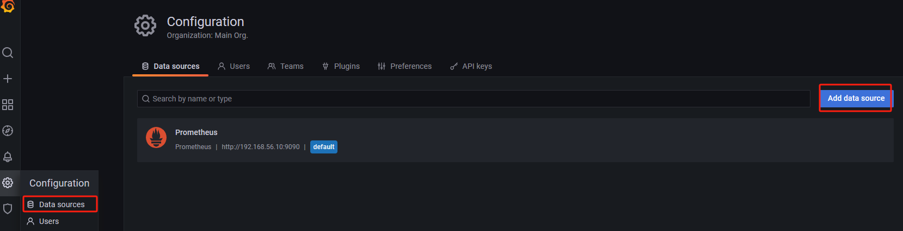
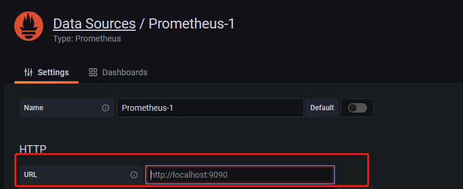
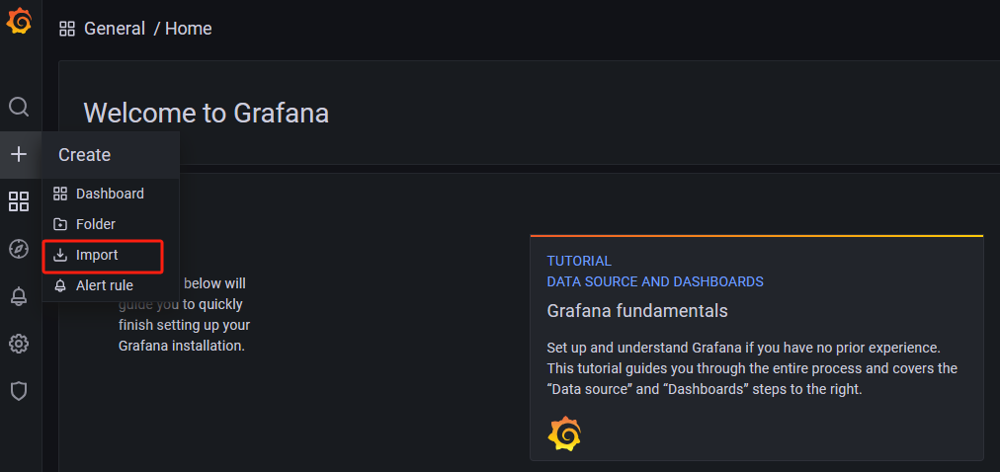
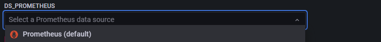
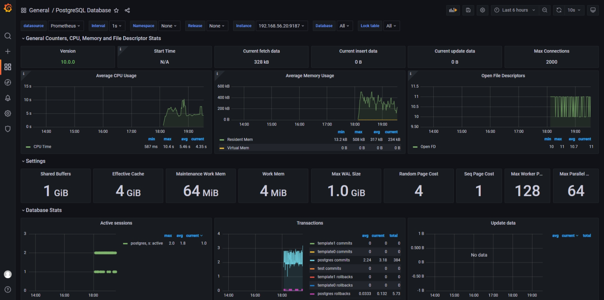

本次监控将采用Prometheus、Grafana可视化工具以及postgres_exporter对OpenTenBase进行全面监控和优化。
安装监控
依赖环境：Docker
下载Prometheus
在进行监控优化时，您可以从Prometheus官方网站下载最新版：https://prometheus.io/download/
您可以选择下载源代码并解压使用，也可以通过Docker直接启动。本教程将重点介绍使用Docker进行快速部署。
执行命令：
docker run -d -p 9090:9090 -v /etc/prometheus:/etc/prometheus prom/prometheus
完成挂载后，请对配置文件进行必要的修改以确保系统正常监控。
vim prometheus.yml
# my global config
global:
scrape_interval: 15s # Set the scrape interval to every 15 seconds. Default is every 1 minute.
evaluation_interval: 15s # Evaluate rules every 15 seconds. The default is every 1 minute.
# scrape_timeout is set to the global default (10s).
# Alertmanager configuration
alerting:
alertmanagers:
- static_configs:
- targets:
# - alertmanager:9093
# Load rules once and periodically evaluate them according to the global 'evaluation_interval'.
rule_files:
# - "first_rules.yml"
# - "second_rules.yml"
# A scrape configuration containing exactly one endpoint to scrape:
# Here it's Prometheus itself.
scrape_configs:
# The job name is added as a label `job=<job_name>` to any timeseries scraped from this config.
- job_name: "prometheus"
# metrics_path defaults to '/metrics'
# scheme defaults to 'http'.
static_configs:
- targets: ["192.168.56.10:9090"]
# 主要修改这里，添加文件形式的扫描
- job_name: "node"
file_sd_configs:
- refresh_interval: 10s
files:
- "/etc/prometheus/conf/node*.yaml"
当前Prometheus的配置采用文件形式进行服务发现。在修改配置时，无需重新启动，系统将自动更新并生效，更新间隔为10秒。
为了修改相关配置文件，首先创建一个名为conf的目录（mkdir conf）然后通过cd命令进入目录（cd /etc/prometheus/conf）接着使用vim编辑器来修改文件（vim node-ms.yaml）
- targets:
- "ip:port"
labels:
hostname: pg
为了自定义配置信息，请将相应的IP地址和主机名修改为您自己的信息。完成修改后，启动Prometheus服务，然后您可以通过访问http://您的IP地址:9090/ 来查看Prometheus的监控数据。
下载Grafana
为了确保配置的持久性，我们可以通过Docker容器以持久化形式启动Grafana。您可以使用以下命令来启动Grafana容器，并在容器重启后保留配置信息：
docker run -d -p 3000:3000 --name=grafana --volume grafana-storage:/var/lib/grafana grafana/grafana-enterprise
启动后，您可以在浏览器中输入http://您的IP地址:3000/
使用默认的用户名和密码admin/admin登录，以查看Grafana监控界面。
配置数据源

在这里，您只需填写URL（http://ip:9090/ ）即可保存配置。这个URL指向Prometheus的地址，Grafana将通过该地址与Prometheus建立连接，从而获取数据用于展示监控面板。

下载Exporter
Prometheus官方提供了丰富的Exporter，您可以在https://prometheus.io/docs/instrumenting/exporters/ 找到相关信息。
我们可以安装postgres_exporter来监控数据库，官方地址为https://github.com/prometheus-community/postgres_exporter。
同样可以以Docker启动：
docker run --net=host -e DATA_SOURCE_NAME="postgresql://opentenbase:@ip:port/postgres?sslmode=disable" quay.io/prometheuscommunity/postgres-exporter
ip和host修改为自己的信息即可，官方示例中对opentenbase用户并没有设置登录密码，我们也不设置密码进行登录。
启动后，我们首先登录到数据库中，然后进行数据库用户的相关设置。
CREATE OR REPLACE FUNCTION __tmp_create_user() returns void as $$
BEGIN
IF NOT EXISTS (
SELECT -- SELECT list can stay empty for this
FROM pg_catalog.pg_user
WHERE usename = 'postgres_exporter') THEN
CREATE USER postgres_exporter;
END IF;
END;
$$ language plpgsql;
SELECT __tmp_create_user();
DROP FUNCTION __tmp_create_user();
ALTER USER postgres_exporter WITH PASSWORD 'password';
ALTER USER postgres_exporter SET SEARCH_PATH TO postgres_exporter,pg_catalog;
GRANT CONNECT ON DATABASE postgres TO postgres_exporter;
-- OpenTenBase中集成的PostgreSQL版本是10，所以可以执行以下语句，历史版本可前往开源地址进行查看。
GRANT pg_monitor to postgres_exporter;
配置监控面板
一旦所有组件都成功启动，接下来我们需要前往市场寻找我们想要的监控面板。你可以访问Grafana的官方仪表板市场：https://grafana.com/grafana/dashboards/?search=postgresql

一旦找到您喜欢的面板，请点击此处进行导入。以下以ID：9628为示例进行导入操作。
这里选择我们的数据源。

让我们来看一下效果如何：
